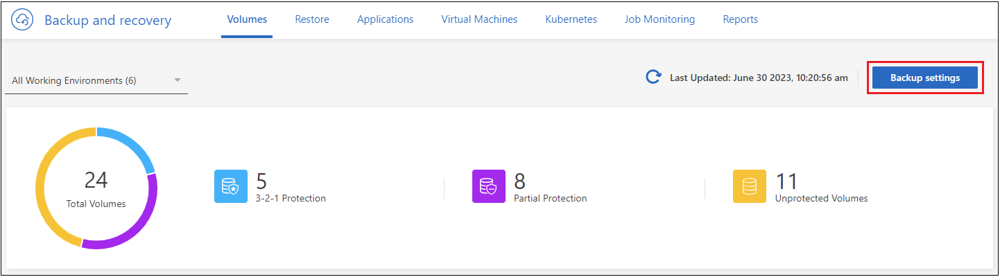
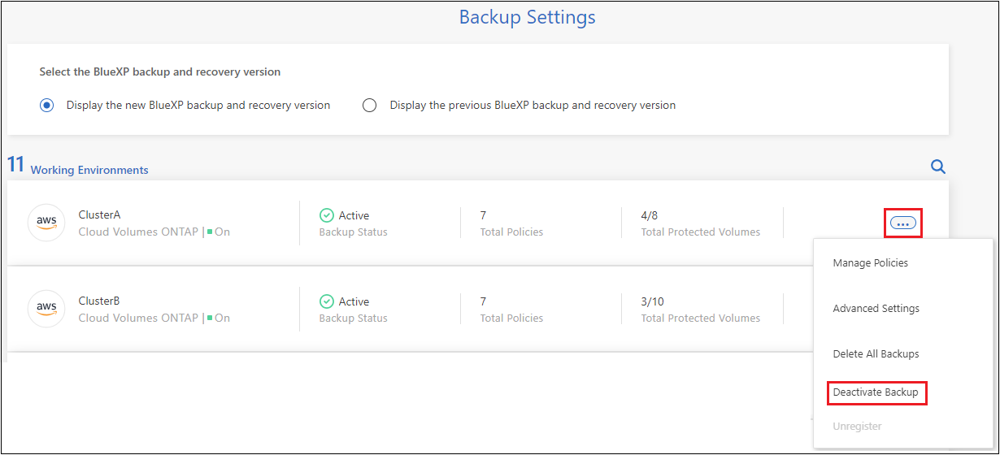

版本資訊
版本資訊
管理 ONTAP 系統的備份
 建議變更
建議變更
您可以變更備份排程、啟用 / 停用磁碟區備份、暫停備份、刪除備份等、來管理 Cloud Volumes ONTAP 和內部部署 ONTAP 系統的備份。這包括所有類型的備份、包括 Snapshot 複本、複寫磁碟區、以及物件儲存中的備份檔案。

|
請勿直接在儲存系統或雲端供應商環境中管理或變更備份檔案。這可能會毀損檔案、並導致不受支援的組態。 |
檢視工作環境中磁碟區的備份狀態
您可以在「 Volume Backup Dashboard 」中檢視目前正在備份的所有磁碟區清單。這包括所有類型的備份、包括 Snapshot 複本、複寫磁碟區、以及物件儲存中的備份檔案。您也可以檢視目前未備份的工作環境中的磁碟區。
-
從BlueXP功能表中、選取* Protection > Backup and recovery *。
-
按一下 * Volumes （磁碟區） * 標籤、檢視 Cloud Volumes ONTAP 和內部部署 ONTAP 系統的備份磁碟區清單。

-
如果您在某些工作環境中尋找特定的磁碟區、您可以根據工作環境和磁碟區來調整清單。您也可以使用搜尋篩選器、或是根據 Volume 樣式（ FlexVol 或 FlexGroup ）、 Volume 類型等來排序欄。
若要顯示其他欄（集合體、安全樣式（ Windows 或 UNIX ）、快照原則、複寫原則和備份原則）、請選取
 。
。 -
檢閱「現有保護」欄中的保護選項狀態。這 3 個圖示代表「本機 Snapshot 複本」、「複製的磁碟區」和「物件儲存中的備份」。

當該備份類型啟動時、每個圖示都會呈現藍色、而當備份類型停用時、則會呈現灰色。您可以將游標移到每個圖示上方、查看所使用的備份原則、以及每種備份類型的其他相關資訊。
在工作環境中的其他磁碟區上啟動備份
如果您在第一次啟用 BlueXP 備份與還原時、只在工作環境中的某些磁碟區上啟動備份、您可以稍後在其他磁碟區上啟動備份。
-
從 * Volumes （磁碟區） * 標籤中、找出您要啟動備份的磁碟區、然後選取 Actions （動作）功能表
 在該列的結尾處、選取 * 啟動備份 * 。
在該列的結尾處、選取 * 啟動備份 * 。
-
在 _ 定義備份策略 _ 頁面中、選取備份架構、然後定義本機 Snapshot 複本、複寫磁碟區和備份檔案的原則和其他詳細資料。請參閱您在此工作環境中啟動之初始磁碟區的備份選項詳細資料。然後單擊*下一步*。
-
檢閱此磁碟區的備份設定、然後按一下 * 啟動備份 * 。
如果您想要使用相同的備份設定、同時在多個磁碟區上啟動備份、請參閱 編輯多個磁碟區上的備份設定 以取得詳細資料。
變更指派給現有磁碟區的備份設定
您可以變更指派給已指派原則之現有磁碟區的備份原則。您可以變更本機 Snapshot 複本、複寫磁碟區和備份檔案的原則。您要套用至磁碟區的任何新 Snapshot 、複寫或備份原則都必須已經存在。
編輯單一磁碟區上的備份設定
-
從 * Volumes （磁碟區） * 標籤中、找出您要變更原則的磁碟區、然後選取 Actions （動作）功能表
在該列的結尾、選取 * 編輯備份策略 * 。
-
在「編輯備份策略」頁面中、變更本機 Snapshot 複本、複寫磁碟區和備份檔案的現有備份原則、然後按一下「 * 下一步 * 」。
如果您在啟動此叢集的 BlueXP 備份與還原時、在初始備份原則中啟用了雲端備份的 _DataLock 與勒索軟體保護、則只會看到已使用 DataLock 設定的其他原則。如果您在啟動 BlueXP 備份與還原時未啟用 _DataLock 和勒索軟體保護、則只會看到未設定 DataLock 的其他雲端備份原則。
-
檢閱此磁碟區的備份設定、然後按一下 * 啟動備份 * 。
編輯多個磁碟區上的備份設定
如果您想在多個磁碟區上使用相同的備份設定、您可以同時在多個磁碟區上啟動或編輯備份設定。您可以選取沒有備份設定的磁碟區、只有 Snapshot 設定、只有備份到雲端設定等、並使用不同的備份設定、在所有這些磁碟區中進行大量變更。
使用多個磁碟區時、所有磁碟區都必須具有下列共同特性：
-
相同的工作環境
-
相同樣式（ FlexVol 或 FlexGroup Volume ）
-
相同類型（讀寫或資料保護磁碟區）
-
從 * Volumes （卷） * 選項卡中，按卷所在的工作環境進行篩選。
-
選取您要管理備份設定的所有磁碟區。
-
根據您要設定的備份動作類型、按一下「大量動作」功能表中的按鈕：

備份動作 … 按一下此按鈕… 管理 Snapshot 備份設定
* 管理本機快照 *
管理複寫備份設定
* 管理複寫 *
管理備份至雲端備份設定
* 管理備份 *
管理多種備份設定類型。此選項也可讓您變更備份架構。
* 管理備份與恢復 *
-
在出現的備份頁面中、變更本機 Snapshot 複本、複寫磁碟區或備份檔案的現有備份原則、然後按一下 * 儲存 * 。
如果您在啟動此叢集的 BlueXP 備份與還原時、在初始備份原則中啟用了雲端備份的 _DataLock 與勒索軟體保護、則只會看到已使用 DataLock 設定的其他原則。如果您在啟動 BlueXP 備份與還原時未啟用 _DataLock 和勒索軟體保護、則只會看到未設定 DataLock 的其他雲端備份原則。
隨時建立手動磁碟區備份
您可以隨時建立隨需備份、以擷取Volume的目前狀態。如果對某個 Volume 進行了非常重要的變更、而且您不想等待下一個排程備份來保護該資料、這項功能就很有用。您也可以使用此功能為目前未備份且想要擷取其目前狀態的磁碟區建立備份。
您可以建立臨機操作 Snapshot 複本或備份至磁碟區的物件。您無法建立臨機操作複寫磁碟區。
備份名稱包含時間戳記、因此您可以從其他排程備份中識別隨需備份。
如果您在啟用此叢集的 BlueXP 備份與還原時啟用 _DataLock 與勒索軟體保護、則隨需備份也會使用 DataLock 進行設定、保留期將為 30 天。對點對點備份不支援勒索軟體掃描。 "深入瞭解DataLock和勒索軟體保護"。
請注意、建立ad -ad hocent備份時、會在來源磁碟區上建立Snapshot。由於此Snapshot並非正常Snapshot排程的一部分、因此不會關閉。備份完成後、您可能想要從來源Volume手動刪除此Snapshot。如此一來、就能釋出與此Snapshot相關的區塊。Snapshot的名稱將以「CBS快照-adhoc-」開頭。 "瞭解如何使用ONTAP CLI刪除Snapshot"。

|
資料保護磁碟區不支援隨需磁碟區備份。 |
-
從* Volumes（磁碟區）索引標籤、按一下
 對於該卷，請選擇 *Backup > * Create Ad-hoc Backup* （ * 備份 * > * 建立臨機操作備份 * ）。
對於該卷，請選擇 *Backup > * Create Ad-hoc Backup* （ * 備份 * > * 建立臨機操作備份 * ）。
該磁碟區的備份狀態欄會顯示「進行中」、直到建立備份為止。
檢視每個磁碟區的備份清單
您可以檢視每個磁碟區的所有備份檔案清單。此頁面會顯示來源磁碟區、目的地位置及備份詳細資料的詳細資料、例如上次備份、目前的備份原則、備份檔案大小等。
-
從* Volumes（磁碟區）*索引標籤、按一下
對於來源 Volume 、請選取 * 檢視 Volume 詳細資料 * 。
依預設會顯示 Volume 的詳細資料和 Snapshot 複本清單。

-
選取 * Snapshot * 、 * Replication * 或 * Backup* 以查看每種備份類型的所有備份檔案清單。

在物件儲存區的磁碟區備份上執行勒索軟體掃描
NetApp 勒索軟體會掃描您的備份檔案、以尋找在建立物件檔案備份、以及還原備份檔案中的資料時、勒索軟體攻擊的證據。您也可以隨時執行隨選勒索軟體保護掃描、以驗證特定備份檔案在物件儲存中的可用性。如果您在特定磁碟區上發生勒索軟體問題、而且想要驗證該磁碟區的備份是否不受影響、這項功能就很實用。
只有當磁碟區備份是從具有 ONTAP 9.11.1 或更新版本的系統建立、且您在備份至物件原則中啟用 _DataLock 和勒索軟體保護時、才能使用此功能。
-
從* Volumes（磁碟區）*索引標籤、按一下
對於來源 Volume 、請選取 * 檢視 Volume 詳細資料 * 。隨即顯示 Volume 的詳細資料。
-
選取 * 備份 * 以查看物件儲存區中的備份檔案清單。

-
按一下
對於您要掃描勒索軟體的 Volume 備份檔案、請按一下 * 掃描勒索軟體 * 。
勒索軟體保護欄會顯示掃描正在進行中。
管理與來源磁碟區的複寫關係
在兩個系統之間設定資料複寫之後、您可以管理資料複寫關係。
-
從* Volumes（磁碟區）*索引標籤、按一下
對於來源 Volume 、請選取 * Replication * 選項。您可以看到所有可用選項。 -
選取您要執行的複寫動作。

下表說明可用的動作：
行動 說明 檢視複寫
顯示磁碟區關係的詳細資料：傳輸資訊、上次傳輸資訊、磁碟區詳細資料、以及指派給該關係的保護原則相關資訊。
更新複寫
開始遞增傳輸、以更新要與來源 Volume 同步的目的地 Volume 。
暫停複寫
暫停 Snapshot 複本的遞增傳輸、以更新目的地 Volume 。如果您想要重新啟動遞增更新、可以稍後繼續。
中斷複寫
中斷來源磁碟區與目的地磁碟區之間的關係、並啟動目的地磁碟區以進行資料存取、使其成為讀寫磁碟區。
當來源磁碟區因資料毀損、意外刪除或離線狀態等事件而無法提供資料時、通常會使用此選項。
"瞭解如何設定目的地Volume以存取資料、並重新啟動ONTAP 來源Volume（英文）、請參閱本文檔"中止複寫
停用將此磁碟區備份到目的地系統的功能、也會停用還原磁碟區的功能。不會刪除任何現有的備份。這不會刪除來源磁碟區和目的地磁碟區之間的資料保護關係。
反轉重新同步
反轉來源與目的地磁碟區的角色。來自原始來源 Volume 的內容會被目的地 Volume 的內容覆寫。當您想要重新啟動離線的來源 Volume 時、這很有幫助。
在上次資料複寫與停用來源磁碟區之間寫入原始來源磁碟區的任何資料都不會保留。刪除關係
刪除來源與目的地磁碟區之間的資料保護關係、這表示磁碟區之間不再發生資料複寫。此動作不會啟動資料存取的目的地磁碟區、也就是說、它不會讓它讀寫。如果系統之間沒有其他資料保護關係、此動作也會刪除叢集對等關係和儲存VM（SVM）對等關係。
選取動作之後、 BlueXP 會更新關係。
編輯現有的雲端備份原則
您可以變更目前套用至工作環境中磁碟區的備份原則屬性。變更備份原則會影響使用原則的所有現有磁碟區。
|
|
|
-
從* Volumes（磁碟區）索引標籤、選取 Backup Settings*（備份設定）。

-
在「備份設定」頁面中、按一下
針對您要變更原則設定的工作環境、選取*管理原則*。
-
在「管理原則」頁面中、按一下「編輯」以取得您要在該工作環境中變更的備份原則。

-
在「編輯原則」頁面中、按一下
 若要展開「標籤與保留」區段以變更排程及/或備份保留、請按一下「儲存」。
若要展開「標籤與保留」區段以變更排程及/或備份保留、請按一下「儲存」。
如果您的叢集執行ONTAP 的是版本不支援的版本號、您也可以選擇在特定天數後啟用或停用將備份分層至歸檔儲存設備。
"深入瞭解如何使用Google歸檔儲存設備"。（需要ONTAP 使用此功能。）
+
+請注意、如果您停止分層備份至歸檔儲存設備、任何已分層至歸檔儲存設備的備份檔案都會留在該層中、不會自動移回標準層級。只有新的Volume備份會駐留在標準層。
新增備份至雲端原則
當您為工作環境啟用 BlueXP 備份與還原時、您最初選取的所有磁碟區都會使用您定義的預設備份原則進行備份。如果您想要將不同的備份原則指派給具有不同恢復點目標（RPO）的特定磁碟區、您可以為該叢集建立其他原則、並將這些原則指派給其他磁碟區。
如果您想要將新的備份原則套用至工作環境中的特定磁碟區、首先必須將備份原則新增至工作環境。您可以 將原則套用至該工作環境中的磁碟區。
|
|
|
-
從* Volumes（磁碟區）索引標籤、選取 Backup Settings*（備份設定）。
-
在「備份設定」頁面中、按一下
針對您要新增原則的工作環境、選取*管理原則*。 -
在「管理原則」頁面中、按一下「新增原則」。

-
在「新增原則」頁面中、按一下
若要展開「標籤與保留」區段以定義排程與備份保留、然後按一下「儲存」。
如果您的叢集執行ONTAP 的是版本不支援的版本號、您也可以選擇在特定天數後啟用或停用將備份分層至歸檔儲存設備。
"深入瞭解如何使用Google歸檔儲存設備"。（需要ONTAP 使用此功能。）
+
刪除備份
BlueXP 備份與還原可讓您刪除單一備份檔案、刪除磁碟區的所有備份、或刪除工作環境中所有磁碟區的所有備份。如果您不再需要備份、或是刪除來源磁碟區並想要移除所有備份、您可能會想要刪除所有備份。
請注意、您無法刪除使用DataLock和勒索軟體保護功能鎖定的備份檔案。如果您已選取一或多個鎖定的備份檔案、則UI中的「刪除」選項將無法使用。
|
|
如果您打算刪除具有備份的工作環境或叢集、則必須在*刪除系統之前刪除備份。刪除系統時、 BlueXP 備份與還原不會自動刪除備份、而且在刪除系統之後、 UI 目前不支援刪除備份。您將繼續支付剩餘備份的物件儲存成本。 |
刪除工作環境的所有備份檔案
刪除工作環境的物件儲存設備上的所有備份、並不會停用此工作環境中未來的磁碟區備份。如果您想要停止在工作環境中建立所有磁碟區的備份、可以停用備份 如此處所述。
請注意、此動作不會影響 Snapshot 複本或複寫的磁碟區、這些類型的備份檔案不會被刪除。
-
從* Volumes（磁碟區）索引標籤、選取 Backup Settings*（備份設定）。
-
按一下
對於您要刪除所有備份的工作環境、請選取*刪除所有備份*。
-
在確認對話方塊中、輸入工作環境的名稱、然後按一下*刪除*。
刪除磁碟區的單一備份檔案
如果您不再需要單一備份檔案、可以將其刪除。這包括刪除磁碟區 Snapshot 複本或物件儲存中備份的單一備份。
您無法刪除複寫的磁碟區（資料保護磁碟區）。
-
從* Volumes（磁碟區）*索引標籤、按一下
對於來源 Volume 、請選取 * 檢視 Volume 詳細資料 * 。將顯示該卷的詳細信息，您可以選擇 Snapshot * 、 *Replication * 或 *Backup 來查看該卷的所有備份文件列表。依預設、會顯示可用的 Snapshot 複本。
-
選取 * Snapshot * 或 * Backup * 以查看您要刪除的備份檔案類型。
-
按一下
針對您要刪除的Volume備份檔案、按一下*刪除*。以下螢幕擷取畫面來自物件儲存區中的備份檔案。
-
在確認對話方塊中、按一下 * 刪除 * 。
刪除 Volume 備份關係
如果您想要停止建立新的備份檔案並刪除來源磁碟區、但保留所有現有的備份檔案、則刪除磁碟區的備份關係可提供歸檔機制。這可讓您在未來視需要從備份檔案還原磁碟區、同時從來源儲存系統中清除空間。
您不一定需要刪除來源Volume。您可以刪除磁碟區的備份關係、並保留來源磁碟區。在此情況下、您可以稍後在磁碟區上「啟動」備份。在這種情況下、會繼續使用原始的基礎備份複本：不會建立新的基礎備份複本、也不會將其匯出至雲端。請注意、如果您確實重新啟動備份關係、磁碟區會被指派預設的備份原則。
此功能僅在系統執行ONTAP 的是更新版本的更新版本時才可使用。
您無法從 BlueXP 備份與還原使用者介面刪除來源磁碟區。不過、您可以在畫版上開啟「Volume Details」（Volume詳細資料）頁面、以及 "從該處刪除磁碟區"。
|
|
一旦關係被刪除、您就無法刪除個別的Volume備份檔案。不過、您可以 "刪除磁碟區的所有備份" 如果您要移除所有備份檔案。 |
-
從* Volumes（磁碟區）*索引標籤、按一下
對於來源 Volume 、請選取 * 備份 * > * 刪除關係 * 。
停用工作環境的 BlueXP 備份與還原
停用工作環境的 BlueXP 備份與還原會停用系統上每個磁碟區的備份、也會停用還原磁碟區的功能。不會刪除任何現有的備份。這並不會從這個工作環境中取消註冊備份服務、基本上可讓您暫停一段時間內的所有備份與還原活動。
請注意、除非您同意、否則雲端供應商會繼續向您收取備份所使用容量的物件儲存成本 刪除備份。
-
從* Volumes（磁碟區）索引標籤、選取 Backup Settings*（備份設定）。
-
在「備份設定」頁面中、按一下
對於您要停用備份的工作環境、請選取*停用備份*。
-
在確認對話方塊中、按一下 * 停用 * 。
|
|
停用備份時、會針對該工作環境顯示*啟動備份*按鈕。若要重新啟用該工作環境的備份功能、請按一下此按鈕。 |
取消註冊工作環境的 BlueXP 備份與還原
如果您不想再使用備份功能、而且想要停止在該工作環境中進行備份、您可以取消註冊工作環境的 BlueXP 備份與還原。一般而言、當您打算刪除工作環境、但想要取消備份服務時、就會使用此功能。
如果您想要變更儲存叢集備份的目的地物件存放區、也可以使用此功能。在您取消註冊工作環境的 BlueXP 備份與還原之後、您可以使用新的雲端供應商資訊、為該叢集啟用 BlueXP 備份與還原。
您必須依照下列順序執行下列步驟、才能取消註冊 BlueXP 備份與還原：
-
停用工作環境的 BlueXP 備份與還原
-
刪除該工作環境的所有備份
取消登錄選項在這兩個動作完成之前無法使用。
-
從* Volumes（磁碟區）索引標籤、選取 Backup Settings*（備份設定）。
-
在「備份設定」頁面中、按一下
針對您要取消註冊備份服務的工作環境、選取*取消註冊*。
-
在確認對話方塊中、按一下*取消登錄*。